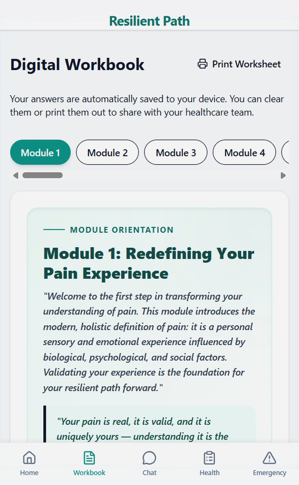

The Resilient Path
The Resilient Path
Understand
The Book
A compassionate, comprehensive guide grounded in the biopsychosocial model of pain.
You have been told to manage your pain. Nobody has told you how. That gap is where most people living with chronic pain spend years. We know, because we have lived there too. This book was written to walk through it with you.
Written from experience, guided by expertise.
Pendleton B. Wickersham, MD Louise Locker, LCSW — Workbook

A Note from the Authors
If you live with chronic pain, you may have spent years trying to explain something no one else can see. You may have been told your tests look fine, or that you look too well to be hurting. You may have quietly grieved plans you used to make, and pushed through days that would flatten anyone else.
We want you to know: we see you. Your pain is real. Your exhaustion is real. The effort it takes to get through an ordinary day is real. You deserve to feel seen and heard, by your doctors, by the people who love you, and by yourself.
We get it, because we have lived it. We are a rheumatologist and a counselor, and both of us live with chronic pain. We wrote The Resilient Path to offer what we most needed along the way: validation of what you are going through, and gentle, practical ways to make life better.
Pendleton B. Wickersham, MD·Louise Locker, LCSW
The Program
The book helps you understand what is happening and why. The workbook is where that understanding becomes your own, where you pause, reflect, and put each lesson into practice. The app carries it all with you, shaped around your answers.
A compassionate, comprehensive guide grounded in the biopsychosocial model of pain.
Where the lessons take root. Guided reflections and exercises, matched chapter by chapter to the book.
Your workbook, your plan, and a guide grounded in the book, with you whenever you need it.
The Approach
Pain is real, and it is shaped by more than the body alone. Your nervous system weighs the signals from your joints and tissues alongside your sleep, your stress, your mood, your worries, and the people around you. Then it sets the volume.
That is why the same condition can feel bearable one day and overwhelming the next. It is the heart of the biopsychosocial model, and it is good news: there are more dials within reach than you may have been told. Medical care matters enormously. So does everything else.
Inflammation, sleep, movement, nutrition, and the treatment plan you build with your care team.
Stress, worry, and grief can amplify pain. Skills that calm a nervous system on high alert can quiet it.
Relationships, work, and feeling understood all shape how much room pain takes up in a day.
None of this means your pain is “all in your head.” It means your whole life has a say in how much you hurt, and every part of it you tend to gives you one more way to turn the volume down.
A Way of Being
This is not a to-do list to finish, or a problem to solve once and set aside. It is an invitation to cultivate a way of being, one steady enough to hold the hard days and the good ones.
A plan that promises to fix chronic pain once and for all sets you up to feel like you have failed every time a flare returns. Shifting from fixing it to walking with it changes that. Setbacks become part of the terrain, not proof you did something wrong, and every step counts, including the small ones.
Accepting life with pain does not mean being passive. Instead it means refocusing your energy from battling your pain to living well with it — so your energy can go toward what matters to you. Research on chronic pain has found that people who practice acceptance tend to be less distressed, less disabled, and more engaged in their lives.
Managing energy is at the heart of living well with pain. Thoughtful pacing means doing a little less on good days so there is more left for hard ones, and stepping out of the cycle of pushing through and then paying for it. Consider this an invitation to find your own pace, and to keep finding it as things change.
Some days will be better than others. Rather than measuring today against the life you had before, or the one you expected, the path asks you to meet this moment as it is, with patience and kindness, and to find the next right step from here.
A way of life, not a destination.
The Book
The diagnosis arrives, the prescriptions start, the appointments stack up, and the daily work of actually living with the condition falls to you. Between visits, you are on your own.
Dr. Wickersham is a practicing rheumatologist who has spent his career in that gap with his patients. He has watched capable, intelligent people leave the exam room with a treatment plan and no idea what Tuesday afternoon is supposed to look like. He knows that gap from the patient's side too, having lived with ankylosing spondylitis since he was 22. This book is what he wishes he had time to say in every appointment.
The book is grounded in the biopsychosocial model: the understanding that your body, your mind, and the life around you all shape how much pain you feel, and that each one offers a way to turn the volume down.
The Resilient Path covers the full territory
Written for people with rheumatoid arthritis, lupus, fibromyalgia, osteoarthritis, and other autoimmune and chronic pain conditions, this book meets you where you are. It is warm, honest, and practical, grounded in clinical evidence, decades of practice, and the kind of understanding that only comes from living with pain yourself.
Resilience is not a personality trait you either have or lack. It is a set of skills. They can be learned, practiced, and rebuilt after setbacks.
Paperback and Kindle edition on Amazon

The Workbook
Reading about managing chronic pain and actually managing it are two different things. This workbook closes the distance.
Insight on its own tends to fade. The lessons that last are the ones you stop and work through: putting them into your own words, trying them in your own life, and noticing what changes. That is what the workbook is for. It is where the ideas in the book become yours.
Every chapter here matches a chapter of the book. Read a chapter, then open the workbook to the same chapter and put it to work. You are never left wondering which exercise goes with what you just read, or where to start.
Dr. Wickersham and licensed clinical social worker Louise Locker, LCSW built these activities from what actually helps people between appointments.
Inside you will find
The pages are yours to write on. There are no right answers and nothing to score.
The five parts
Three lenses for the work
Every exercise is approached through three lenses. They are what turn a list of activities into a way of being.
Reading gives you the map. This is where you start walking.
Paperback on Amazon — designed to be written in
The Companion App
The Resilient Path app brings the whole program to your phone, and shapes it around you. As you work through the modules, your own reflections and choices come together into a plan that is uniquely yours.

Your workbook answers become your own plan. When a flare hits, Flare Mode reads your Flare-Up Plan back to you, one tap from home.
The program guide answers from the full text of the book and workbook, and names the chapter or module so you can find it in your book.
Looking for that pacing example you read last month? Just ask, instead of searching through the pages.
The whole workbook digitally, with guided journaling and checklists.
Medications, symptoms, providers, and history — exportable for your doctor.
Crisis helplines, urgent care guidance, and when-to-call checklists.
7-day free trial · $3.99/month · Cancel anytime
The Authors
Two people who live with chronic pain, writing for people who do too.

FACP, FACR — Board-certified rheumatologist
Dr. Wickersham has built his career on two foundational pillars: providing exceptional, innovative patient care and demonstrating a profound commitment to serving his community. Diagnosed with ankylosing spondylitis at age 22, he possesses a rare and intimate understanding of living with chronic pain, viewing its challenges from both a clinical and a personal lens.
When not hard at work, he balances his dedication to patients with a deep love of the outdoors. He is an avid rockhound and fisherman, often finding both solace and adventure in the natural world.
Contact Dr. Wickersham: pendleton@brewsterwickershampublications.com

Counselor & community leader
Louise Locker is a counselor, community leader, and lifelong learner who has spent decades helping people navigate life's challenges with courage and compassion. Her work blends professional insight with lived experience, including her own journey with arthritis and chronic pain.
She believes resilience grows through patience, perseverance, and thoughtful pacing. In her spare time she enjoys music, sunrise photography in her favorite botanical garden, and helping bring good things to life in her community.
Order
Start wherever feels right: the book, the workbook, or the app. There is no wrong place to begin, and no pace but your own.
Your condition may be permanent. Your relationship with it is not.
All editions available on Amazon
Also available as an app